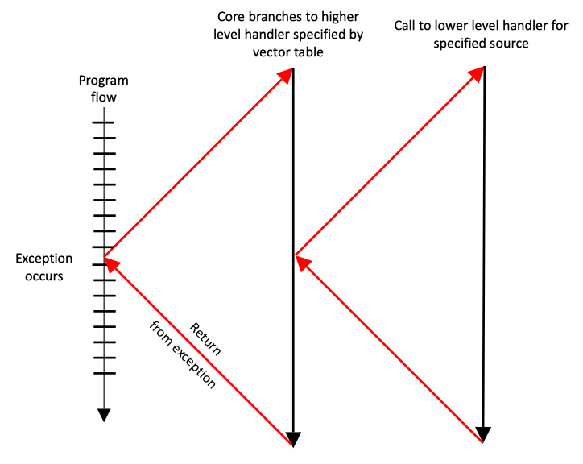

AArch64 System calls
Software interrupts, or SVCs as they are now known, are generated by using the ARM instruction SVC. This causes an exception to be taken, and forces the processor into Supervisor mode, which is privileged. A user program can request services from an operating system through such exception handling mechanisms.1
A64 system calls#
Each user-mode process operates in isolation from other code on the system, with no direct visibility of the code or data of other processes or of the operating system kernel itself, and user-mode processes have no direct access to device hardware, unless explicitly authorized by the operating system kernel. When user-mode programs do have a specific need to interact with other processes, access files, and other system resources, or to interact with hardware, they must do so via OS-provided APIs in the form of so-called system calls, or syscalls.2
In Armv8-A, a user-mode process invokes a system call to request a service provided by the kernel using the supervisor call (SVC) instruction. This instruction causes the processor to issue an SVC exception, which causes the process to suspend and immediately transition control to the kernel’s registered SVC handler in kernel mode. The kernel can then decode which system call was requested and invoke the corresponding kernel-mode routine to service the request. Once the system call routine is complete, the result of the system call is relayed back to the process, and the user-mode process resumes at the instruction immediately following the SVC instruction that triggered the request.
A64 Instruction Set Architecture#
Learn the architecture - A64 Instruction Set Architecture Guide | 28. System calls
Sometimes it is necessary for software to request a function from a more privileged entity. This might happen when, for example, an application requests that the OS opens a file.
In A64, there are special instructions for making such system calls. These instructions cause an exception, which allows controlled entry into a more privileged Exception level.
SVCSupervisor call causes an exception targetingEL1. Used by an application to call the OS.HVCHypervisor call causes an exception targetingEL2. Used by an OS to call the hypervisor, not available atEL0.SMCSecure monitor call causes an exception targetingEL3. Used by an OS or hypervisor to call theEL3firmware, not available atEL0.
If an exception is executed from an Exception level higher than the target exception level, then the exception is taken to the current Exception level. This means that an SVC at EL2 would cause exception entry to EL2. Similarly, an HVC at EL3 causes exception entry to EL3. This is consistent with the rule that an exception can never cause the processor to lose privilege.
Programmer's Guide for ARMv8-A#
ARM Cortex-A Series Programmer's Guide for ARMv8-A
6.5 System control and other instructions - 6.5.1 Exception handling instructions
There are three exception handling instructions whose purpose it is to cause an exception to be taken. These are used to make a call to code that runs in a higher Exception level in the OS (EL1), the Hypervisor (EL2), or Secure Monitor (EL3):
SVC #imm16// Supervisor call, allows application program to call the kernel // (EL1).HVC #imm16// Hypervisor call, allows OS code to call hypervisor (EL2).SMC #imm16// Secure Monitor call, allows OS or hypervisor to call Secure // Monitor (EL3).
The immediate value is made available to the handler in the Exception Syndrome Register. This is a change from ARMv7, where the immediate value had to be determined by reading the opcode of the calling instruction. See Chapter 10 AArch64 Exception Handling for further information.
To return from an exception, use the ERET instruction. This instruction restores processor state by copying SPSR_ELn to PSTATE and branches to the saved return address in ELR_ELn.
10: AArch64 Exception Handling - Exception generating instructions
Execution of certain instructions can generate exceptions. Such instructions are typically executed to request a service from software that runs at a higher privilege level:
- The Supervisor Call (
SVC) instruction enables User mode programs to request an OS service. - The Hypervisor Call (
HVC) instruction enables the guest OS to request hypervisor services. - The Secure monitor Call (
SMC) instruction enables the Normal world to request Secure world services.
If the resulting exception was generated as a result of an instruction fetch at EL0, it is taken as an exception to EL1, unless the HCR_EL2.TGE bit is set in the Non-secure state, in which case it is taken to EL2.
If the exception was generated as a result of an instruction fetch at any other Exception level, the Exception level remains unchanged.
Earlier in the book, we saw that the ARMv8-A architecture has four Exception levels. Processor execution can only move between Exception levels by taking, or returning from, an exception. When the processor moves from a higher to a lower Exception level, the execution state can stay the same, or it can switch from AArch64 to AArch32. Conversely, when moving from a lower to a higher Exception level, the execution state can stay the same or switch from AArch32 to AArch64.

Figure 10-1 shows schematically the program flow associated with an exception occurring when running an application. The processor branches to a vector table which contains entries for each exception type. The vector table contains a dispatch code which typically identifies the cause of the exception, and select and call the appropriate function to handle it. This code completes execution and then return to the high-level handler which then executes the ERET instruction to return to the application.
10.2 Synchronous and asynchronous exceptions
10.2.3 System calls
Some instructions or system functions can only be carried out at a specific Exception level. If code running at a lower Exception level needs to perform a privileged operation, for example, when application code requests functionality from the kernel. One way to do this is by using the SVC instruction. This allows applications to generate an exception. Parameters may be passed in registers, or coded within the System call.
10.2.4 System calls to EL2/EL3
We saw earlier how SVC may be used to call from user applications at EL0 to the kernel at EL1. The HVC and SMC system call instructions move the processor in a similar fashion to EL2 and EL3. When the processor is executing at EL0 (Application), it cannot call directly into the hypervisor (EL2) or Secure monitor (EL3). This is only possible from EL1 and above. Applications must therefore use SVC to call into kernel and allow the kernel to call into higher Exception levels on their behalf.
From the OS kernel (EL1), software can call the hypervisor (EL2) with the HVC instruction, or call the Secure monitor (EL3) with the SMC instruction. If the processor is implemented with EL3, the ability to have EL2 trap SMC instructions from EL1 is provided. If there is no EL3, the SMC is unallocated and triggers at the current Exception level.
Similarly, from hypervisor code (EL2), the program can call the Secure monitor (EL3) with the SMC instruction. If you make an SVC call when in EL2 or EL3 it will still cause a synchronous exception at the same Exception level, and the handler for that Exception level can decide how to respond.
10.3 Changes to execution state and Exception level caused by exceptions
When an exception is taken, the processor may change execution state (from AArch64 to AArch32) or stay in the same execution state. For example, an external source may generate an IRQ (interrupt) exception while executing an application running in AArch32 mode and then execute the IRQ handler within the OS Kernel running in AArch64 mode.
Consider an application running in EL0, which is interrupted by an IRQ as in Figure 10-5. The Kernel IRQ handler runs at EL1. The processor determines which execution state to set when it takes the IRQ exception.
linux syscall conventions#
What is the interface for ARM system calls and where is it defined in the Linux kernel?
syscall(2) - Linux manual page - Architecture calling conventions
Chromium OS Docs - Linux System Call Table
| arch | syscall NR | return | arg0 | arg1 | arg2 | arg3 | arg4 | arg5 |
|---|---|---|---|---|---|---|---|---|
| arm | r7 | r0 | r0 | r1 | r2 | r3 | r4 | r5 |
| arm64 | x8 | x0 | x0 | x1 | x2 | x3 | x4 | x5 |
| x86 | eax | eax | ebx | ecx | edx | esi | edi | ebp |
| x86_64 | rax | rax | rdi | rsi | rdx | r10 | r8 | r9 |
Programming with 64-Bit ARM Assembly Language: Single Board Computer Development for Raspberry Pi and Mobile Devices | Chapter 7: Linux Operating System Services - Calling Convention
The calling convention for system calls is different from that for functions. It uses a software interrupt to switch context from our user-level program to the context of the Linux kernel.
The calling convention is
X0–X7: Input parameters, up to eight parameters for the system call.X8: The Linux system call number.- Call software interrupt 0 with
SVC 0. X0: The return code from the call.
SVC 0command that executes software interrupt number 0. This branches to the interrupt handler in the Linux kernel, which interprets the parameters we’ve set in various registers and does the actual work.3
The software interrupt is a clever way for us to call routines in the Linux kernel without knowing where they are stored in memory. It also provides a mechanism to run at a higher security level while the call executes.
We know 93 is the Linux system call number for exit and 64 is the number for write to a file. These seem rather cryptic. Where do we look these up? Can’t we use something symbolic in our programs rather than these magic numbers? The Linux system call numbers are defined in the C include file: /usr/include/asm-generic/unistd.h
In this file, there are define statements such as the following:
/* fs/read_write.c */
#define __NR_write 64
/* kernel/exit.c */
#define __NR_exit 93
This defines the symbol __NR_write to represent the magic number 64 for the Linux system call write, and 93 for exit.
aarch64-linux svc 0#
Request Linux service to write a string of bytes/characters to the standard output device.
Compile, link and run in rpi3b-ubuntu/aarch64:
# compile and link
$ as write.s -o write.o && ld write.o -o write
# execute binary
$ ./write
Hi A64!
$ cc write.c -o write && ./write
Hi A64!
references#
Register file of AArch64
AArch64 Execution States
AArch64 Exception Levels and Security States
Linux system call flow in ARM64
-
ARM Assembly Language: Fundamentals and Techniques, 2nd Edition | Chapter 14: Exception Handling : ARM7TDMI - 14.8 PROCEDURES FOR HANDLING EXCEPTIONS - 14.8.5 SVCs ↩
-
Blue Fox: Arm Assembly Internals and Reverse Engineering | Chapter 3 OS Fundamentals - OS Architecture Overview - User Mode vs. Kernel Mode, System Calls ↩
-
Programming with 64-Bit ARM Assembly Language | Chapter 1: Getting Started - Hello World - Assembly Instructions ↩